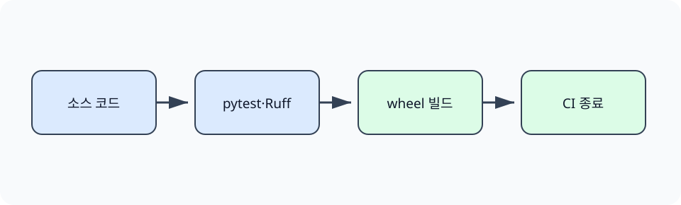

한경 KDT · LLM Agent 개발 & 바이브코딩 · Part 7 · 프로덕션 엔지니어링 · Ch 33 · CI/CD와 배포 운영
서비스 코드를 작성한 뒤에도 변경은 계속됩니다. 작은 수정이 기존 기능, 평가 점수, 이미지 내용, 운영 지표에 영향을 줄 수 있습니다. 사람이 매번 같은 명령을 기억해서 실행하면 확인 순서가 빠지거나 서로 다른 환경에서 다른 결과를 얻게 됩니다. 테스트·린트·빌드와 GitHub Actions는 변경을 일정한 순서로 확인하고, 기준을 만족한 결과만 다음 단계로 보내는 방법입니다.
이 장의 실습은 외부 저장소와 클라우드 계정 없이 로컬에서 실행됩니다. 학생은 명령의 출력과 프로세스 종료 코드를 직접 확인합니다. 실제 GitHub Actions와 클라우드 배포에서는 같은 명령을 원격 실행 환경과 배포 권한에 연결합니다. 로컬 성공은 원격 배포 성공을 보장하지 않으므로, 확인한 범위를 명확히 구분합니다.
Ch2에서 pytest와 패키징을, Ch3에서 PR 검토 흐름을, Ch32에서 Docker 이미지를 만들었습니다. 이 절은 이미 배운 검사를 사람이 기억해서 실행하는 대신, 같은 명령과 순서를 워크플로 파일에 기록하는 방법으로 연결합니다.
제품 생산선에서 치수 검사, 표면 검사, 포장 검사는 서로 다른 결함을 찾습니다. 코드도 pytest가 동작을, Ruff가 정적 규칙을, wheel 빌드가 배포 파일 생성을 확인합니다. 어느 단계든 종료 코드가 0이 아니면 다음 단계로 보내지 않습니다.
GitHub Actions의 워크플로(workflow)는 저장소의 이벤트에 반응해 하나 이상의 작업(job)을 실행하는 YAML 파일입니다. 각 작업은 실행기(runner)에서 단계(step)를 순서대로 수행합니다. 이 실습의 워크플로는 PR과 main 브랜치 push를 시작 조건으로 삼고, 테스트와 린트와 평가 회귀를 같은 Python 3.12 환경에서 실행합니다. 테스트는 관찰 가능한 동작을 확인하고, 린트는 실행 전에 찾을 수 있는 코드 문제를 검사하며, 빌드는 배포할 파일을 만듭니다. 세 검사는 목적이 다르므로 하나의 성공으로 다른 검사를 대신하지 않습니다.
연속 통합(Continuous Integration, CI)은 저장소 변경을 자주 합치면서 자동 검사로 오류를 이르게 찾는 방식입니다. 연속 전달 또는 연속 배포(Continuous Delivery/Deployment, CD)는 검사를 통과한 결과물을 배포 가능한 상태로 만들거나 실제 환경에 반영하는 과정입니다. 파이프라인(pipeline)은 이 단계와 의존 관계를 기록한 실행 순서입니다. 아티팩트(artifact)는 빌드가 만든 패키지, 이미지, 평가 보고서처럼 다음 단계가 사용하는 결과물입니다.
CI의 한 단계는 명령의 화면 문구보다 종료 코드로 성공과 실패를 판단합니다. pytest, Ruff, wheel 빌드는 각각 동작, 정적 규칙, 배포 산출물을 검사하며 서로 대신하지 않습니다. subprocess.run의 returncode가 0이면 성공이고 0이 아니면 실패입니다. 노트북은 일부러 실패하는 임시 테스트와 수정한 테스트를 같은 방식으로 실행해 이 계약을 확인합니다.
로컬에서 세 명령이 통과해도 CI 환경의 Python 버전, 잠금 파일, 운영체제가 다르면 결과가 달라질 수 있습니다. 워크플로에는 실행 환경과 설치 명령을 고정하고, 빌드한 wheel을 다음 배포 단계가 같은 산출물로 사용하도록 보관합니다. 테스트를 배포 때 다시 다른 소스에서 만들면 검증 대상과 배포 대상이 어긋납니다.

세 검사의 결과를 한 문구로 합치지 않고 단계별 종료 코드와 산출물 이름을 남깁니다. 어느 단계에서 멈췄는지 알아야 수정할 파일과 다시 실행할 범위를 정할 수 있습니다.
먼저 제공된 테스트 스위트와 Ruff 검사를 별도 프로세스로 실행합니다. 이어서 임시 폴더에 실패하는 테스트를 만들고 pytest의 실제 종료 코드를 관찰합니다. 같은 테스트의 기대값만 수정해 성공 종료 코드와 비교합니다. GitHub에 PR을 만들지는 않지만, `.github/workflows/ci.yml`에는 같은 명령이 들어 있습니다.
준비된 Python 3.12 노트북에서 첫 셀부터 Shift+Enter로 하나씩 실행합니다. 안내한 결과를 먼저 확인하고 지정한 값 하나를 바꿔 비교합니다. 문서를 사용하는 실습은 파일 묶음이 필요합니다. 노트북과 실습 파일 함께 받기 · 처음 실습하는 방법. 전체 코드 복사에는 아래의 Before/After 셀도 포함됩니다. 이 HTML에서는 코드를 실행하지 않습니다.
같은 검증 명령을 로컬과 CI에서 실행하고 종료 코드를 확인합니다.
첫 셀의 Path 탐색은 어느 상위 폴더에서 열어도 Ch33의 pyproject.toml을 기준으로 실습 폴더를 찾습니다. 뒤의 subprocess.run(..., cwd=lab, capture_output=True)은 명령을 별도 프로세스로 실행하고 화면 문구와 종료 코드를 함께 반환합니다. 이 보조 코드는 CI를 흉내 내는 공통 실행 경계이며, 각 절의 판정은 다음 셀에서 해당 명령의 실제 반환값을 읽어 결정합니다.
from pathlib import Path
import subprocess, sys
lab = next((p for p in [Path.cwd(), *Path.cwd().parents] if p.name == "ch33-cicd" and (p / "pyproject.toml").is_file()), Path("labs/part7/ch33-cicd")).resolve()
print(sys.version.split()[0], lab.exists())3.12.13 True
CI의 한 단계는 명령의 화면 문구보다 종료 코드로 성공과 실패를 판단합니다. pytest, Ruff, wheel 빌드는 각각 동작, 정적 규칙, 배포 산출물을 검사하며 서로 대신하지 않습니다. subprocess.run의 returncode가 0이면 성공이고 0이 아니면 실패입니다. 노트북은 일부러 실패하는 임시 테스트와 수정한 테스트를 같은 방식으로 실행해 이 계약을 확인합니다.
result = subprocess.run([sys.executable, "-m", "pytest", "-q"], cwd=lab, text=True, capture_output=True)
print(result.stdout.strip())
print("exit_code=", result.returncode)
assert result.returncode == 0..... [100%] 5 passed in 0.07s exit_code= 0
result = subprocess.run(["ruff", "check", "cicd_demo.py", "tests"], cwd=lab, text=True, capture_output=True)
print(result.stdout.strip() or "ruff: PASS")
print("exit_code=", result.returncode)
assert result.returncode == 0All checks passed! exit_code= 0
import tempfile
with tempfile.TemporaryDirectory() as out:
result = subprocess.run([sys.executable, "-m", "build", "--wheel", "--outdir", out], cwd=lab, text=True, capture_output=True)
wheels = [p.name for p in Path(out).glob("*.whl")]
print("wheels=", wheels, "exit_code=", result.returncode)
assert result.returncode == 0 and len(wheels) == 1wheels= ['ch33_cicd_lab-0.1.0-py3-none-any.whl'] exit_code= 0
확인할 점 — pytest와 Ruff의 종료 코드 0, 생성된 wheel 한 개를 확인합니다. 임시 실패 테스트는 0이 아닌 코드를, 수정본은 0을 반환하는지 비교합니다.
실패 테스트는 `2 + 2 == 5`라는 잘못된 기대값 때문에 실제로 실패합니다. pytest는 실패 개수와 함께 종료 코드 1을 반환하고, CI 실행기는 이를 작업 실패로 처리할 수 있습니다. 수정본은 기대값을 4로 고정하며 종료 코드 0을 반환합니다. 이 비교는 테스트 실패를 출력 문자열로 흉내 내지 않고 별도 프로세스의 상태로 확인합니다.
앞의 실행 예제를 실행한 같은 노트북에서 Before 다음 After 순서로 실행합니다. 출력은 실제 실행 결과입니다.
임시 저장소에서 실패하는 테스트를 추가합니다. 실제 pytest 프로세스가 0이 아닌 종료 코드를 반환합니다.
import tempfile
with tempfile.TemporaryDirectory() as temp:
p = Path(temp) / "test_regression.py"
p.write_text("def test_regression():\n assert 2 + 2 == 5\n")
failed = subprocess.run([sys.executable, "-m", "pytest", "-q", str(p)], text=True, capture_output=True)
print(failed.stdout.strip().splitlines()[-1])
print("exit_code=", failed.returncode)
assert failed.returncode != 01 failed in 0.01s exit_code= 1
같은 테스트의 기대값을 고치면 프로세스가 종료 코드 0을 반환합니다.
로컬에서 세 명령이 통과해도 CI 환경의 Python 버전, 잠금 파일, 운영체제가 다르면 결과가 달라질 수 있습니다. 워크플로에는 실행 환경과 설치 명령을 고정하고, 빌드한 wheel을 다음 배포 단계가 같은 산출물로 사용하도록 보관합니다. 테스트를 배포 때 다시 다른 소스에서 만들면 검증 대상과 배포 대상이 어긋납니다.
with tempfile.TemporaryDirectory() as temp:
p = Path(temp) / "test_regression.py"
p.write_text("def test_regression():\n assert 2 + 2 == 4\n")
passed = subprocess.run([sys.executable, "-m", "pytest", "-q", str(p)], text=True, capture_output=True)
print(passed.stdout.strip().splitlines()[-1])
print("exit_code=", passed.returncode)
assert passed.returncode == 01 passed in 0.00s exit_code= 0
자동화가 모든 위험을 판단하는 것은 아닙니다. 측정 기준이 빠져 있으면 파이프라인은 빠진 기준을 검사하지 못합니다. 외부 서비스 장애, 권한 오류, 실제 사용자 트래픽의 변화도 로컬 실습만으로 알 수 없습니다. 팀은 자동 검사가 판단할 항목과 사람이 승인할 항목을 배포 정책에 함께 기록해야 합니다.
다음 학습과 이어지는 지점 — 이 장에서 만든 상태 검사와 중단 조건은 Ch38 Hooks에서 작업 전후에 자동으로 실행하는 검사의 원형이 됩니다. 최종 프로젝트에서는 실제 저장소 권한과 배포 환경을 연결한 뒤 같은 원칙으로 확장합니다.
워크플로는 이벤트와 전체 자동화 흐름을 정의하고, 작업은 한 실행기에서 수행할 단계의 묶음입니다.
생략할 수 없습니다. 린트는 정적 문제를 찾고 테스트는 실행 결과를 확인하므로 목적이 다릅니다.
검사 프로세스가 0이 아닌 종료 코드를 반환해야 합니다.
생성하지 않았습니다. 로컬 실행과 워크플로 파일의 구조만 검증했습니다.